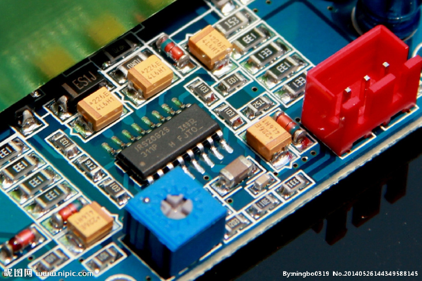

<form name="r-p-form" id="r-p-form">
  
  <br>
  <input type="file" name="r-file" id="r-file" class="r-file" multiple="multiple" />
</form>
<script src="./jquery-1.12.4.js"></script>
<script>
  $("#r-file").change(function () {
    var objUrl = getObjectURL(this.files[0]);
    console.log("objUrl = " + objUrl);
    if (objUrl) {
      $("#r-img").attr("src", objUrl);
      $("#r-img").removeClass("r-img");
    }
  });
  //建立一個可存取到該file的url
  function getObjectURL(file) {
    var url = null;
    if (window.createObjectURL != undefined) { // basic
      url = window.createObjectURL(file);
    }
    else if (window.URL != undefined) {
      // mozilla(firefox)
      url = window.URL.createObjectURL(file);
    }
    else if (window.webkitURL != undefined) {
      // webkit or chrome
      url = window.webkitURL.createObjectURL(file);
    }
    return url;
  }
</script>